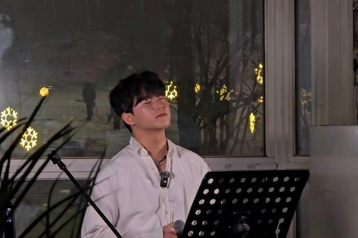
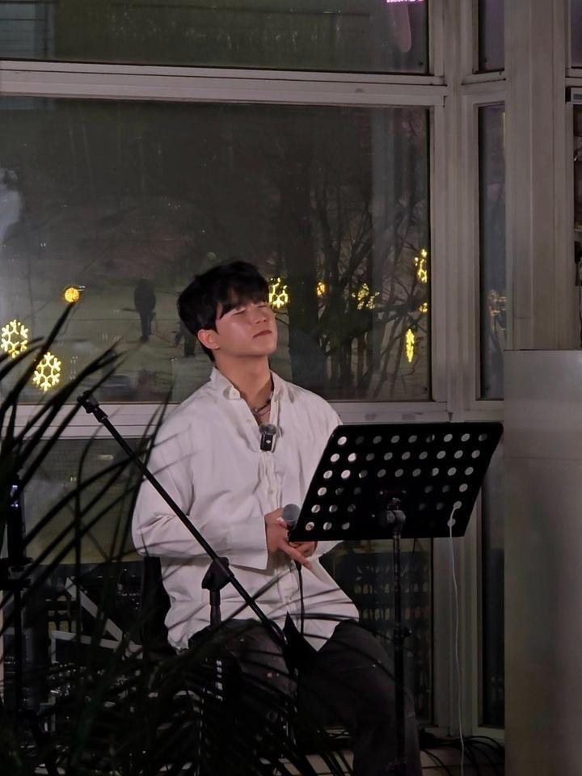

정점은 감정선이 살아 있는 라이브 무대를 지향하는 보컬 아티스트입니다. 곡의 분위기를 섬세하게 살리는 표현력과 안정적인 가창력이 강점이며, 소극장 공연과 라이브 콘텐츠, 행사 무대까지 다양한 자리에서 노래해 왔습니다.

주요 무대
- Mnet '너의 목소리가 보여' 출연(준우승)
- Mnet 'My Boyfriend is Better' 1회 우승
- 2024 대학 축제 초청공연
- 2024 전라남도 정원페스티벌 초청공연
- 2022 월드마스터 위원회 행사 초청공연
이런 자리에 잘 맞아요
- 기업 만찬·리셉션
- 대학 축제·초청 공연
- 기념식 축하 무대
공연 구성
- 발라드 중심 라이브 셋리스트
- 행사 분위기에 맞춘 곡 선정
- 반주 방식은 행사장 음향에 맞춰 협의
섭외 진행 순서
- 문의: 날짜·장소·공연 시간 확인
- 일정 확인과 견적
- 계약: 주식회사 위메이커 명의
- 셋리스트와 음향 사전 협의
- 행사 당일 리허설과 공연
자주 묻는 질문
섭외 비용은 어떻게 정해지나요?
행사 날짜와 장소, 공연 시간, 편성에 따라 달라집니다. 날짜와 장소를 알려 주시면 일정을 확인해 견적을 보내 드립니다.
음향 장비도 준비해 주나요?
필요하면 메이커팀이 무대와 음향까지 함께 준비합니다. 행사장 음향을 쓰는 경우에는 공연 전에 장비 사양을 확인합니다.
원하는 곡을 넣을 수 있나요?
행사 성격에 맞춰 셋리스트를 제안하고, 원하시는 곡이 있으면 미리 협의해 반영합니다.